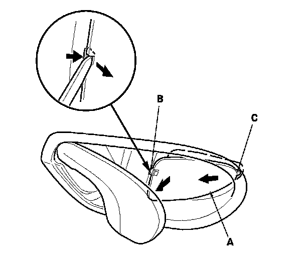
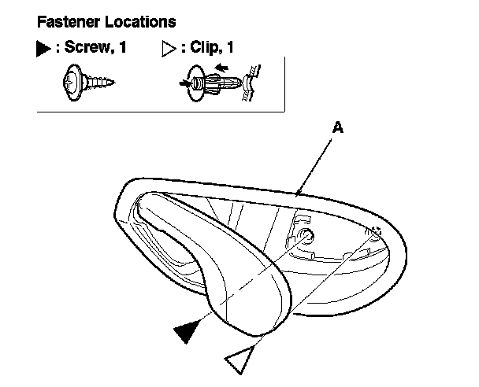
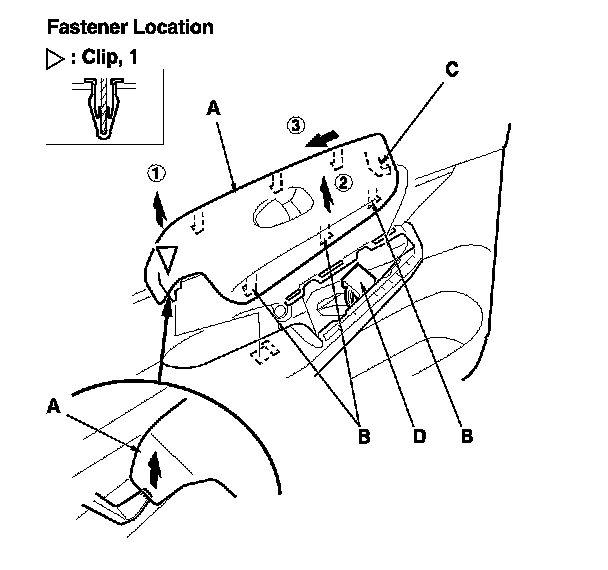
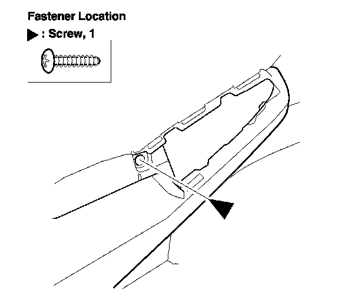
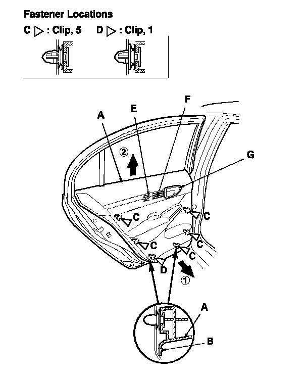
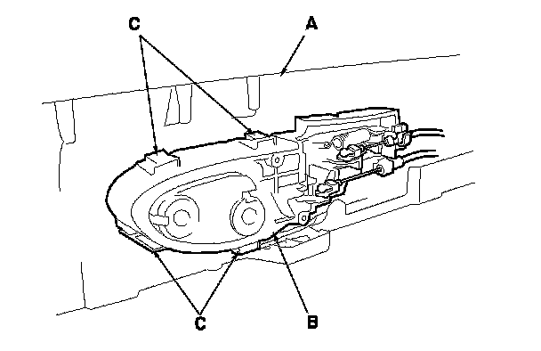
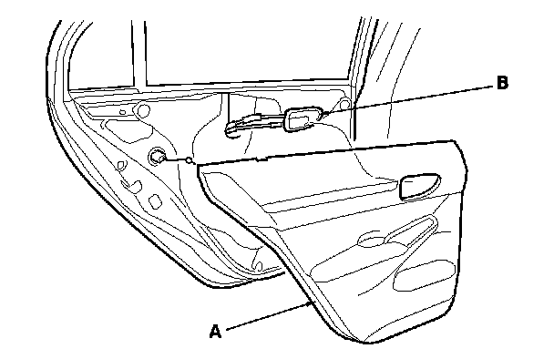
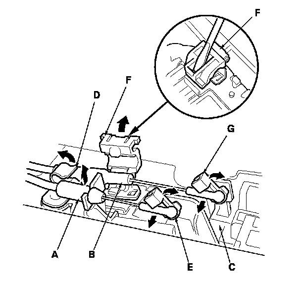
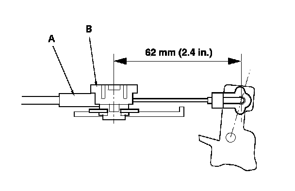

Rear Door Panel: Service and Repair
Rear Door Panel Removal/Installation
Special Tools Required
- KTC trim tool set SOJATP2014*
- Trim pad remover, Snap-on A 177A or equivalent, commercially available
4-door
NOTE: Use the appropriate tool from the KTC trim tool set to avoid damage when removing components.
1. Raise the glass fully.
2. Pry out on the rear portion of the inner handle cap (A) to release the hooks (B, C) using the appropriate trim tool.

3. Remove the screw and the clip securing the inner handle (A).

4. Remove the power window switch panel (A).
-1 Pry up on the rear edge of the switch panel to release the rear clip using the appropriate trim tool.
-2 Pull out along the edge of the panel to release the hooks (B).
-3 Pull the switch panel rearward to release the front hook (C).
-4 Disconnect the power window switch connector (D).

5. Remove the screw.

6. Remove the door panel (A) with as little bending as possible to avoid creasing or breaking it.
-1 Start at the bottom edge of the door panel, release the clips that are just above the marks (B) on the edge of the panel with a commercially available trim pad remover.
-2 Detach the upper clips (C, D).
-3 Stating at the rear, pull the door panel upward.
-3 NOTE: The inner handle cable (E) and the latch cable (F) are connected to the inner handle (G). Do not pull the door panel up too far, or these cables will be damaged.

7. While holding the door panel (A) away from the door, remove the inner handle (B) from the door panel by releasing the hooks (C).

8. Remove the door panel (A) while pulling the inner handle (B) out through the hole in the door panel.

9. If necessary, disconnect the inner handle cable (A) and the latch cable (B) from the inner handle (C).
-1 Detach the inner handle cable fastener (D), then disconnect the inner handle cable from the cable fastener (E).
-2 Detach the latch cable fastener (F) with a flat-tip screwdriver, then disconnect latch cable from the cable fastener (G).
-2 NOTE: If the cable fasteners are damaged or stress-whitened, replace them with new ones.

10. Install the door panel in the reverse order of removal, and note these items:
- If the clips are damaged or stress-whitened, replace them with new ones.
- Replace any damaged cable fasteners with new ones.
- The latch cable (A) should be fixed to the cable fastener (B) with the latch in lock position as shown.
- Make sure the connector is plugged in properly, and the cables are connected securely.
- Make sure the window and power door lock operate properly.
- When reinstalling the door panel, make sure the plastic cover is installed properly and sealed around its outside perimeter to seal out water.
- Check for water leaks. Adjustments
